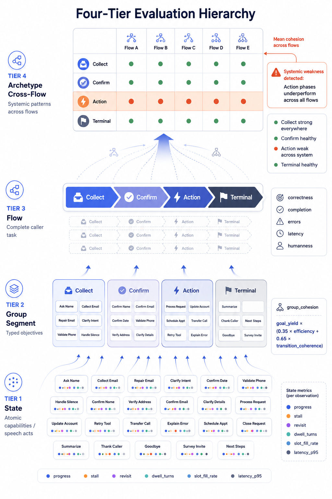

The RIFF Evaluation & Goal-Hierarchy System
How a voice-AI flow engine measures itself — at four nested levels, with cheap deterministic gates per commit and an expensive judged matrix at night.
RIFF is a voice-AI flow engine. A flow is a conversation script for a phone agent — “book a plumbing visit,” “take a coffee order,” “reserve a table.” Under the hood a flow is a finite-state machine (FSM): a graph of states, with edges (transitions) guarded by deterministic string expressions evaluated against the call's slot bag. The large language model (LLM) only produces language; it never decides which state comes next. That separation — declared graph in the FSM, words from the LLM — is the spine the whole evaluation system is built on.
This documentation describes everything built to answer one question reliably: “is a flow good, and if not, exactly which part is broken?” The answer is not a single number. It is a four-tier goal hierarchy, where every level declares a goal and is instrumented with a metric for that goal.

The four-tier hierarchy
Read top-down. Each tier rolls up into the one above it, and each tier has its own “what good means” and its own measurement.
collect, every confirm, every action — grouped into one bucket.collect the slots, confirm the read-back, act (a tool succeeds), reach a terminal, or handoff safely.group_cohesion = goal_yield · (0.35·efficiency + 0.65·transition_coherence) — do the group's states work together? Group cohesion »--analyze → --matrix → --segment-matrix →
--state-matrix --flow F.
Computed vs. judged — the cost split
The single most important design decision: separate what we can compute deterministically from what we must judge with an LLM.
| Computed aspects | Judged aspect | |
|---|---|---|
| which | correctness, completion, errors, latency, and all per-state / group metrics | humanness only |
| source | the live event stream (state transitions, guards, tool calls, timing) | an LLM grading a transcript against a rubric |
| noise | none — deterministic | ~1.5 points single-run (judge-dominated) |
| cost | free, fast | API calls, slow |
| cadence | every commit (the CI gate) | nightly (the judge panel) |
Because only humanness pays the judge-noise tax, most of the scorecard is trustworthy and cheap, and we spend LLM calls only on the genuinely subjective axis. See Methodology & lessons for why the noise floor forces repeat-N and why “harden the instrument” is the prime directive.
The quality database
Everything lands in one SQLite file, docs/flow-eval/quality.db, driven by
scripts/eval_db.py. Five tables hold the truth; a dozen read-time views slice it.
| Table | Grain | What it holds |
|---|---|---|
runs | one per eval run | commit, branch, dirty flag, agent model, judge flags — the feature captured at run start |
scores | flow × persona | legacy quality/robustness/success + per-cell variance (quality_runs) |
aspect_scores | conversation × aspect × judge | the tidy long-format matrix; computed rows use judge='(computed)' |
state_scores | conversation × state | per-state root-cause metrics, tagged with the state's segment |
flow_mods | flow × commit | every git commit that touched a flow's YAML — so a score change can be tied to an edit vs. noise |
Read this in order
Judge-the-Judge & disciplineNew2026-06-24
Never trust a verdict you can't cross-check. The judge panel (Gemini/Qwen/Codex), the deterministic guard, the scanner that over-flagged 60%, and why repeat-N beats one run.
Effective LLM Policy2026-06-23
Route the right model per state (inheritance + override). The four cases, the proof harness, the drift risk. Note: the first routing assignment was a misdiagnosis — see the validation update.
Goal-Hierarchy design
The flagship spec: flow → group → state, each with a goal and a metric. Start here.
The evaluation matrix
Tier-3 flow scorecard. Computed aspects + judged humanness, crossed by agent.
Per-state metrics
Tier-1 root cause. How the event stream becomes progress / stall / dwell.
Group cohesion
Tier-2. Do a group's states collaborate, or thrash? The bounded metric.
Archetypes
Tier-4. The same subpart across all flows — systemic-weakness finder.
GoalSegment schema
The typed group contract (new this session) — the data future phases consume.
Judges
The roster: remote, local, and CLI judges. Spread = humanness uncertainty.
Backend mocks
Letting backend-gated flows reach their payoff in eval — without faking guards.
Holdout validation
Dev vs. held-out personas — the overfitting guard. Never debug the held-out set.
CI quality gate
The per-commit deterministic gate + the pre-push hook.
Session replay
Re-drive recorded sessions after a change — the regression check.
Stall recovery (FSM)
The stalled guard + sets: edges — deterministic recovery from a withholding caller.
Call quality & reviews2026-06-28
The two-layer post-call review system: live audio recording privacy cascades, Whisper-vs-Gemini timeline debugging, VAD tuning, and nightly batch evaluations.
Voice Quality PlaybookNew2026-06-28
The playbook for voice reliability: detecting timing races, reproducing them with scripts/voice_case.py, testing with FakeLiveClient in CI, and fixing systemic bugs (B-318, B-319, B-320).
Methodology & lessons
The noise floor, harden-the-instrument, per-persona decomposition, holdout discipline.